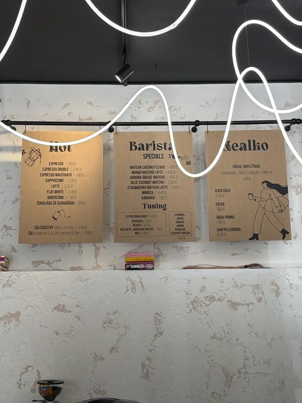
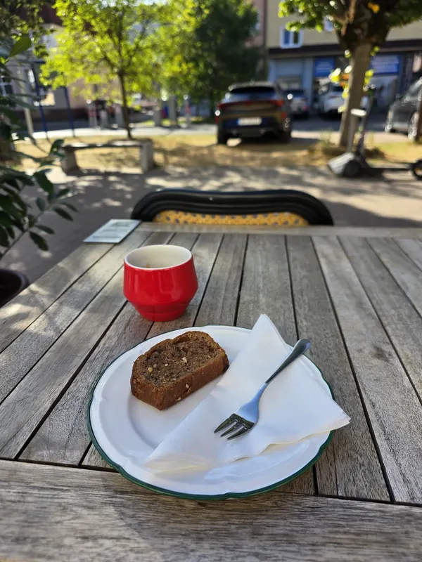
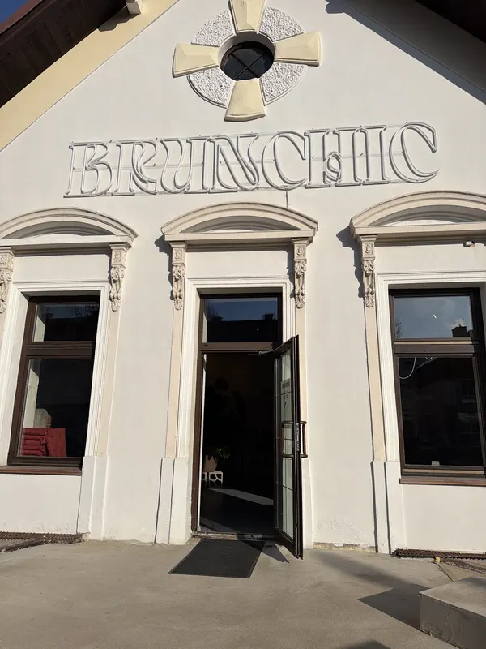
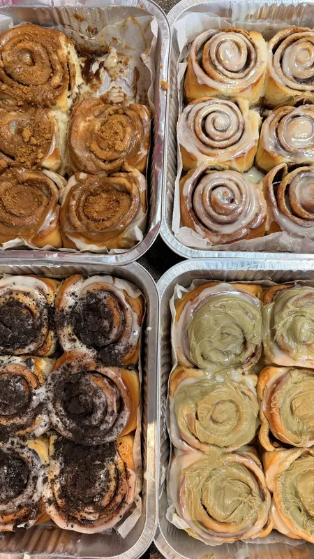

Workshopy a kurzy
Keramický workshop aj kurz maľovania sa u nás už konali. Ak máte vlastný nápad, ozvite sa a dohodneme sa.
Toto je ukážkový návrh webu pre Brunchic Poprad. Pripravil Peter Mráz. Obsah aj fotky pochádzajú z verejného profilu podniku, nič nie je vymyslené.
U nás sa už konali workshopy, DJ párty aj komunitný beh. Ak máte vlastný nápad, napíšte nám a povieme si, či to v danom termíne zvládneme.
Keramický workshop aj kurz maľovania sa u nás už konali. Ak máte vlastný nápad, ozvite sa a dohodneme sa.
DJ párty od šiestej do desiatej večer sú u nás pravidelné. ŠkoláChic párty sme robili na začiatok školského roka.
Od nás štartuje BRUNchic komunitný beh. Priestor je v centre mesta, s parkovaním hneď vedľa a terasou na námestí.






Termín sa dohodne v kalendári, rovnako ako všetko ostatné. Stačí deň, počet ľudí a o akú akciu ide.
V kalendári si vyberiete deň a zvolíte možnosť Celý priestor. Napíšete, čo plánujete, a my sa ozveme s potvrdením termínu.
Mapu načítame až po kliknutí, aby stránka nesťahovala nič z Googlu zbytočne. Otvoriť v Mapách Google